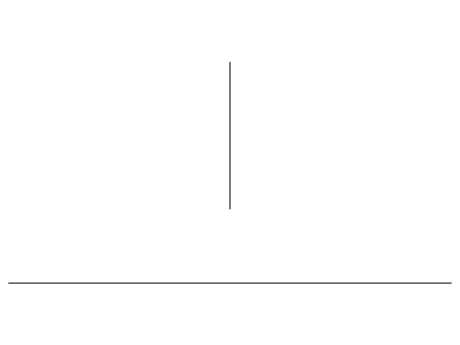
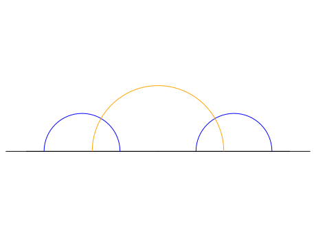
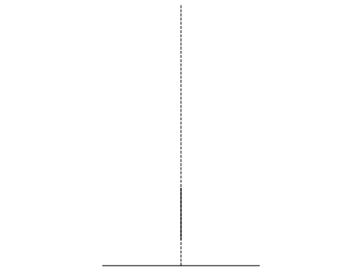

This module implements the abstract base class for geodesics in
hyperbolic space of arbitrary dimension. It also contains the
implementations for specific models of hyperbolic geometry.
AUTHORS:
Greg Laun (2013): initial version
EXAMPLES:
We can construct geodesics in the upper half plane model, abbreviated
UHP for convenience:
sage: g=HyperbolicPlane().UHP().get_geodesic(2,3)sage: gGeodesic in UHP from 2 to 3
This geodesic can be plotted using plot(), in this example we will show
the axis.
sage: g=HyperbolicPlane().UHP().get_geodesic(I,3*I)sage: gGeodesic in UHP from I to 3*Isage: g.plot()# optional - sage.plotGraphics object consisting of 2 graphics primitives

Geodesics are oriented, which means that two geodesics with the same
graph will only be equal if their starting and ending points are
the same:
Abstract base class for oriented geodesics that are not necessarily
complete.
INPUT:
start – a HyperbolicPoint or coordinates of a point in
hyperbolic space representing the start of the geodesic
end – a HyperbolicPoint or coordinates of a point in
hyperbolic space representing the end of the geodesic
EXAMPLES:
We can construct a hyperbolic geodesic in any model:
sage: HyperbolicPlane().UHP().get_geodesic(1,0)Geodesic in UHP from 1 to 0sage: HyperbolicPlane().PD().get_geodesic(1,0)Geodesic in PD from 1 to 0sage: HyperbolicPlane().KM().get_geodesic((0,1/2),(1/2,0))Geodesic in KM from (0, 1/2) to (1/2, 0)sage: HyperbolicPlane().HM().get_geodesic((0,0,1),(0,1,sqrt(2)))Geodesic in HM from (0, 0, 1) to (0, 1, sqrt(2))
Return the unique hyperbolic geodesic perpendicular to two given
geodesics, if such a geodesic exists. If none exists, raise a
ValueError.
INPUT:
other – a hyperbolic geodesic in the same model as self
OUTPUT:
a hyperbolic geodesic
EXAMPLES:
sage: g=HyperbolicPlane().UHP().get_geodesic(2,3)sage: h=HyperbolicPlane().UHP().get_geodesic(4,5)sage: g.common_perpendicular(h)Geodesic in UHP from 1/2*sqrt(3) + 7/2 to -1/2*sqrt(3) + 7/2

It is an error to ask for the common perpendicular of two
intersecting geodesics:
sage: g=HyperbolicPlane().UHP().get_geodesic(2,4)sage: h=HyperbolicPlane().UHP().get_geodesic(3,infinity)sage: g.common_perpendicular(h)Traceback (most recent call last):...ValueError: geodesics intersect; no common perpendicular exists
Return the geodesic with ideal endpoints in bounded models. Raise a
NotImplementedError in models that are not bounded.
In the following examples we represent complete geodesics by a dashed
line.
EXAMPLES:
sage: H=HyperbolicPlane()sage: UHP=H.UHP()sage: UHP.get_geodesic(1+I,1+3*I).complete()Geodesic in UHP from 1 to +Infinity

sage: PD=H.PD()sage: PD.get_geodesic(0,I/2).complete()Geodesic in PD from -I to Isage: PD.get_geodesic(0.25*(-1-I),0.25*(1-I)).complete()Geodesic in PD from -0.895806416477617 - 0.444444444444444*I to 0.895806416477617 - 0.444444444444444*I
sage: KM=H.KM()sage: KM.get_geodesic((0,0),(0,1/2)).complete()Geodesic in KM from (0, -1) to (0, 1)
sage: HM=H.HM()sage: HM.get_geodesic((0,0,1),(1,0,sqrt(2))).complete()Geodesic in HM from (0, 0, 1) to (1, 0, sqrt(2))
If the second object is a geodesic ultraparallel to the first,
or if it is a point on the boundary that is not one of the
first object’s endpoints, then return +infinity
Return the ideal endpoints in bounded models. Raise a
NotImplementedError in models that are not bounded.
EXAMPLES:
sage: H=HyperbolicPlane()sage: UHP=H.UHP()sage: UHP.get_geodesic(1+I,1+3*I).ideal_endpoints()[Boundary point in UHP 1, Boundary point in UHP +Infinity]sage: PD=H.PD()sage: PD.get_geodesic(0,I/2).ideal_endpoints()[Boundary point in PD -I, Boundary point in PD I]sage: KM=H.KM()sage: KM.get_geodesic((0,0),(0,1/2)).ideal_endpoints()[Boundary point in KM (0, -1), Boundary point in KM (0, 1)]sage: HM=H.HM()sage: HM.get_geodesic((0,0,1),(1,0,sqrt(2))).ideal_endpoints()Traceback (most recent call last):...NotImplementedError: boundary points are not implemented in the HM model
sage: UHP=HyperbolicPlane().UHP()sage: UHP.get_geodesic(I,2*I).model()Hyperbolic plane in the Upper Half Plane Modelsage: PD=HyperbolicPlane().PD()sage: PD.get_geodesic(0,I/2).model()Hyperbolic plane in the Poincare Disk Modelsage: KM=HyperbolicPlane().KM()sage: KM.get_geodesic((0,0),(0,1/2)).model()Hyperbolic plane in the Klein Disk Modelsage: HM=HyperbolicPlane().HM()sage: HM.get_geodesic((0,0,1),(0,1,sqrt(2))).model()Hyperbolic plane in the Hyperboloid Model
sage: g=HyperbolicPlane().PD().get_geodesic(0,1)sage: g.perpendicular_bisector()Traceback (most recent call last):...ValueError: the length must be finite
Convert the current object to image in another model.
INPUT:
model – the image model
EXAMPLES:
sage: UHP=HyperbolicPlane().UHP()sage: PD=HyperbolicPlane().PD()sage: UHP.get_geodesic(I,2*I).to_model(PD)Geodesic in PD from 0 to 1/3*Isage: UHP.get_geodesic(I,2*I).to_model('PD')Geodesic in PD from 0 to 1/3*I
Geodesics in this model are represented by segments of circles contained
within the unit disk that are orthogonal to the boundary of the disk,
plus all diameters of the disk.
INPUT:
start – a HyperbolicPoint in hyperbolic space
representing the start of the geodesic
end – a HyperbolicPoint in hyperbolic space
representing the end of the geodesic
The geodesics in this model are represented by circular arcs perpendicular
to the real axis (half-circles whose origin is on the real axis) and
straight vertical lines ending on the real axis.
INPUT:
start – a HyperbolicPoint in hyperbolic space
representing the start of the geodesic
end – a HyperbolicPoint in hyperbolic space
representing the end of the geodesic
Return the unique hyperbolic geodesic perpendicular to self
and other, if such a geodesic exists; otherwise raise a
ValueError.
INPUT:
other – a hyperbolic geodesic in current model
OUTPUT:
a hyperbolic geodesic
EXAMPLES:
sage: UHP=HyperbolicPlane().UHP()sage: g=UHP.get_geodesic(2,3)sage: h=UHP.get_geodesic(4,5)sage: g.common_perpendicular(h)Geodesic in UHP from 1/2*sqrt(3) + 7/2 to -1/2*sqrt(3) + 7/2
It is an error to ask for the common perpendicular of two
intersecting geodesics:
sage: g=UHP.get_geodesic(2,4)sage: h=UHP.get_geodesic(3,infinity)sage: g.common_perpendicular(h)Traceback (most recent call last):...ValueError: geodesics intersect; no common perpendicular exists
Determine the ideal (boundary) endpoints of the complete
hyperbolic geodesic corresponding to self.
OUTPUT:
a list of 2 boundary points
EXAMPLES:
sage: UHP=HyperbolicPlane().UHP()sage: UHP.get_geodesic(I,2*I).ideal_endpoints()[Boundary point in UHP 0, Boundary point in UHP +Infinity]sage: UHP.get_geodesic(1+I,2+4*I).ideal_endpoints()[Boundary point in UHP -sqrt(65) + 9, Boundary point in UHP sqrt(65) + 9]